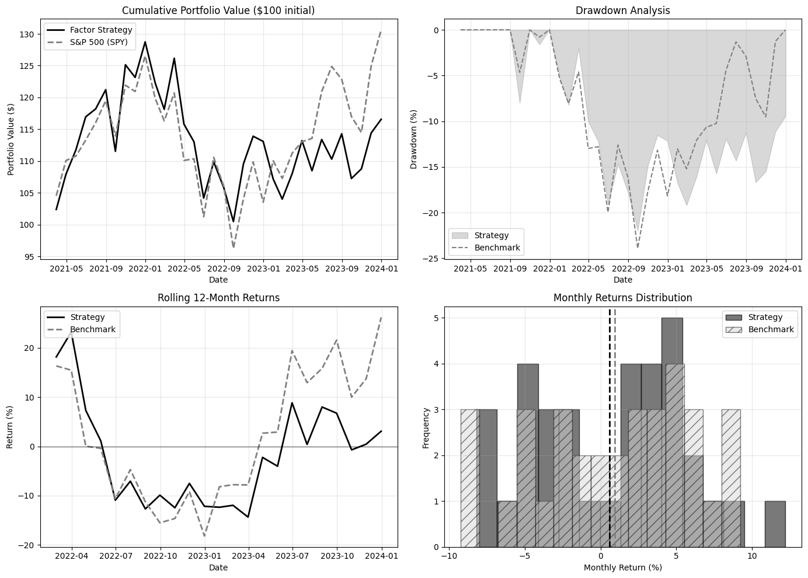

Chapter 9: AI in Portfolio Optimization
AI tutorial
This page accompanies Chapter 9 of Mastering AI-Powered Finance. Use cases, practical activities, and discussion topics are in the printed chapter. Section, equation, and figure numbers that are not on this page refer to the printed chapter.
- Notebook: Download the notebook or the notebook with its data files. The notebook is the reviewed, runnable version of this tutorial, with saved outputs; its code can differ in places from the listings on this page.
- Packages:
matplotlib,numpy,pandas,pandas-datareader,scikit-learn,scipy,yfinance. - Data:
data/fundamentals_snapshot.csv,data/prices_2019_2024.csv(included in the download with data files). - API key: none needed.
AI Tutorial, Part 2: Portfolio Optimization, Backtesting, and Evaluation
This tutorial completes the equity investment pipeline begun in Part 1 on the Chapter 8 page. Part 1 downloaded five years of daily prices for 52 stocks and SPY from Yahoo Finance, built value, quality, momentum, and low-volatility factor scores, and selected ten stocks by composite rank. Run Part 1 first: the code below uses its price panel, return series, and selected stocks. Here the selected stocks become a weighted portfolio through constrained mean-variance optimization with shrinkage estimators, which is then backtested with transaction costs and evaluated against the benchmark.
Mean-Variance Portfolio Optimization with Constraints
This block turns the ten selected stocks into a weighted portfolio by solving the constrained mean-variance problem of Equation ?, but with shrunk inputs rather than raw sample estimates. It first estimates two ingredients, an expected-return vector and a covariance matrix, and then (in the next code block) hands them to a solver. The inputs are real, computed from the downloaded monthly returns, but they are deliberately regularized, and that regularization is the part most worth understanding.
Both estimators apply shrinkage, the antidote to the “optimization paradox” described in the Estimation Risk discussion, where an optimizer fed noisy sample means produces extreme, unstable weights. estimate_expected_returns with method=’shrinkage’, shrinkage=0.3 pulls each stock’s historical mean 30% of the way toward the cross-sectional grand mean, so the formula is 0.3 * grand_mean + 0.7 * historical_mean. This tempers the most aggressive return forecasts (the ones an optimizer would otherwise overweight) without erasing the cross-sectional ordering. estimate_covariance with method=’shrinkage’ applies fixed-intensity constant-correlation shrinkage: it blends the noisy sample covariance with a structured target (a constant-correlation matrix, where every pair of stocks is assumed to share the same average correlation) using shrinkage_intensity = 0.2, so 80% sample plus 20% target. Shrinkage matters most here because with only ten assets and a few years of monthly data the sample covariance is poorly conditioned; the target supplies the stable structure the optimizer needs to avoid betting on spurious low-correlation pairs. A higher intensity would be more stable but more biased toward the assumption that all stocks are equally correlated; 0.2 is a teaching assumption, not an estimated Ledoit–Wolf optimum.
The risk_free_rate default is a constant 4% annual assumption used consistently in the Sharpe objective and comparison. It is not a reconstructed historical cash-rate series. Historical-return estimates can be extreme even after shrinkage, which motivates concentration constraints; they should not be interpreted as forecasts with established predictive accuracy.
In production, estimate_covariance would be replaced by a calibrated Ledoit-Wolf or a factor-model covariance (and the expected returns by Black-Litterman posteriors built from the factor scores, per the Black-Litterman section), and the risk-free rate would be the live short-rate matched to the rebalancing horizon. The optimizer itself is set up in the next block.
def estimate_expected_returns(returns, method='historical', shrinkage=0.5):
"""Estimate expected returns for optimization."""
if method not in {'historical', 'shrinkage'} or not 0 <= shrinkage <= 1:
raise ValueError('Unknown return estimator or invalid shrinkage intensity.')
historical_mean = returns.mean() * 12 # Annualized
if method == 'historical':
return historical_mean
elif method == 'shrinkage':
# Shrink toward grand mean (reduces estimation error)
grand_mean = historical_mean.mean()
shrunk = shrinkage * grand_mean + (1 - shrinkage) * historical_mean
return shrunk
return historical_mean
def estimate_covariance(returns, method='sample', shrinkage_target='constant_corr'):
"""Estimate covariance matrix for optimization."""
if method not in {'sample', 'shrinkage'} or shrinkage_target not in {'constant_corr', 'identity'}:
raise ValueError('Unknown covariance estimator or shrinkage target.')
if len(returns) < 2 or returns.empty or not np.isfinite(returns.to_numpy()).all():
raise ValueError('Covariance estimation requires complete, finite monthly returns.')
sample_cov = returns.cov() * 12 # Annualized
if method == 'sample':
return sample_cov
elif method == 'shrinkage':
n = len(returns.columns)
# Shrinkage target: constant correlation matrix
if shrinkage_target == 'constant_corr':
sample_corr = returns.corr().fillna(0)
off_diagonal = sample_corr.to_numpy()[~np.eye(n, dtype=bool)]
avg_corr = float(off_diagonal.mean()) if n > 1 else 0.0
target_corr = np.full((n, n), avg_corr)
np.fill_diagonal(target_corr, 1.0)
std_devs = np.sqrt(np.diag(sample_cov))
target = np.outer(std_devs, std_devs) * target_corr
target = pd.DataFrame(target, index=sample_cov.index,
columns=sample_cov.columns)
else:
# Identity scaled by average variance
avg_var = np.diag(sample_cov).mean()
target = pd.DataFrame(np.eye(n) * avg_var,
index=sample_cov.index,
columns=sample_cov.columns)
# Fixed 20% shrinkage: a teaching heuristic, not estimated Ledoit-Wolf.
# Higher intensity trades sample noise for bias toward the target.
shrinkage_intensity = 0.2
shrunk_cov = (1 - shrinkage_intensity) * sample_cov + shrinkage_intensity * target
return shrunk_cov
return sample_cov
def portfolio_performance(weights, expected_returns, cov_matrix, risk_free_rate=0.04):
"""Calculate portfolio expected return, volatility, and Sharpe ratio."""
port_return = np.dot(weights, expected_returns)
port_vol = np.sqrt(np.dot(weights.T, np.dot(cov_matrix, weights)))
sharpe = (port_return - risk_free_rate) / port_vol if port_vol > 0 else np.nan
return port_return, port_vol, sharpe
def optimize_portfolio(expected_returns, cov_matrix, risk_free_rate=0.04,
max_weight=0.20, min_weight=0.02, target_return=None):
"""Optimize portfolio weights using mean-variance optimization."""
n = len(expected_returns)
if n == 0 or not 0 <= min_weight <= max_weight <= 1 or n * min_weight > 1 + 1e-10 or n * max_weight < 1 - 1e-10:
raise ValueError('Position bounds cannot form a fully invested portfolio.')
cov_matrix = cov_matrix.loc[expected_returns.index, expected_returns.index]
if not np.isfinite(expected_returns.to_numpy()).all() or not np.isfinite(cov_matrix.to_numpy()).all():
raise ValueError('Optimizer inputs must be finite.')
if not np.allclose(cov_matrix, cov_matrix.T) or np.linalg.eigvalsh(cov_matrix).min() < -1e-10:
raise ValueError('Covariance must be symmetric positive semidefinite.')
if target_return is not None:
# Greedily allocate remaining capacity to obtain attainable return bounds.
attainable = []
for order in (np.argsort(expected_returns.to_numpy()), np.argsort(-expected_returns.to_numpy())):
w = np.full(n, min_weight, dtype=float)
for j in order:
w[j] += min(max_weight - min_weight, max(0.0, 1 - w.sum()))
attainable.append(float(w @ expected_returns.to_numpy()))
if not attainable[0] - 1e-8 <= target_return <= attainable[1] + 1e-8:
raise ValueError('Target return is infeasible under the position bounds.')
init_weights = np.ones(n) / n
# Objective: minimize negative Sharpe ratio (maximize Sharpe)
def neg_sharpe(weights):
ret, vol, sharpe = portfolio_performance(weights, expected_returns.values,
cov_matrix.values)
return -(ret - risk_free_rate) / max(vol, 1e-12)
# Objective for minimum variance
def portfolio_variance(weights):
return np.dot(weights.T, np.dot(cov_matrix.values, weights))
# Constraints
constraints = [
{'type': 'eq', 'fun': lambda w: np.sum(w) - 1} # Weights sum to 1
]
if target_return is not None:
constraints.append({
'type': 'eq',
'fun': lambda w: np.dot(w, expected_returns.values) - target_return
})
# Bounds: long-only with position limits
bounds = tuple((min_weight, max_weight) for _ in range(n))
# Optimize
if target_return is None:
result = minimize(neg_sharpe, init_weights, method='SLSQP',
bounds=bounds, constraints=constraints,
options={'maxiter': 1000, 'ftol': 1e-10})
else:
result = minimize(portfolio_variance, init_weights, method='SLSQP',
bounds=bounds, constraints=constraints,
options={'maxiter': 1000, 'ftol': 1e-10})
if not result.success or abs(result.x.sum() - 1) > 1e-6 or (result.x < min_weight - 1e-6).any() or (result.x > max_weight + 1e-6).any():
raise RuntimeError(f'Portfolio optimization failed: {result.message}')
if target_return is not None and abs(result.x @ expected_returns.to_numpy() - target_return) > 1e-6:
raise RuntimeError('Optimizer did not satisfy the target-return constraint.')
optimal_weights = result.x
opt_ret, opt_vol, opt_sharpe = portfolio_performance(
optimal_weights, expected_returns.values, cov_matrix.values
)
return {
'weights': pd.Series(optimal_weights, index=expected_returns.index),
'return': opt_ret,
'volatility': opt_vol,
'sharpe': (opt_ret - risk_free_rate) / opt_vol if opt_vol > 0 else np.nan,
'success': result.success
}
# Get returns for selected stocks only
selected_returns = monthly_returns[selected_stocks].dropna()
# Estimate inputs
exp_returns = estimate_expected_returns(selected_returns, method='shrinkage',
shrinkage=0.3)
cov_matrix = estimate_covariance(selected_returns, method='shrinkage')
print("Expected Returns (annualized):")
print(exp_returns.round(4))
print(f"\nRisk-free rate: 4.0%")Optimization: Maximum Sharpe Ratio Portfolio
This block calls optimize_portfolio to find the long-only weights that maximize the Sharpe ratio, the tangency portfolio of the Efficient Frontier discussion, subject to a budget constraint (sum(w) = 1) and per-stock bounds of min_weight=0.02 and max_weight=0.20. The bounds are the practical position limits from the Practical Constraints discussion: every stock must hold at least 2% (forcing some diversification) and no stock may exceed 20% (capping concentration). The solver is scipy’s SLSQP.
The reported expected return, volatility and Sharpe are in-sample functions of the supplied estimates. At a 4% cash-rate assumption their arithmetic must satisfy \(S=(\mu_p-0.04)/\sigma_p\). The optimizer checks feasibility, label alignment and solver success. A weight at the maximum cap means the unconstrained objective would prefer more exposure to that asset; it is a concentration diagnostic, not proof of either skill or estimation error. Historical out-of-sample evaluation remains necessary.
In production this is exactly why teams pair shrinkage with hard constraints and often add a turnover or tracking-error term; without the 20% cap the same optimizer on raw sample means would routinely produce two- or three-stock portfolios. The Practical Constraints discussion and the first Practical Activity show how sector caps and benchmark-relative tracking-error limits extend this same setup.
# Maximum Sharpe Ratio Portfolio
max_sharpe_result = optimize_portfolio(
exp_returns, cov_matrix,
risk_free_rate=0.04,
max_weight=0.20,
min_weight=0.02
)
print("Maximum Sharpe Ratio Portfolio:")
print("-" * 40)
print(f"Expected Return: {max_sharpe_result['return']:.2%}")
print(f"Volatility: {max_sharpe_result['volatility']:.2%}")
print(f"Sharpe Ratio: {max_sharpe_result['sharpe']:.3f}")
print(f"\nOptimal Weights:")
weights_sorted = max_sharpe_result['weights'].sort_values(ascending=False)
for ticker, weight in weights_sorted.items():
print(f" {ticker}: {weight:.1%}")Alternative Portfolios: Equal Weight and Minimum Variance
This block builds two reference portfolios on the same ten stocks so the max-Sharpe result has something to be measured against. The equal_weight portfolio simply holds 10% in each name, a naive 1/N benchmark that is famously hard to beat out-of-sample. The minimum_variance portfolio solves for the lowest-variance weights subject to the same 2%–20% bounds; it depends only on the covariance matrix, not on the expected returns, which is why it is favored when return forecasts are distrusted (the Global Minimum Variance point from the Efficient Frontier discussion).
The comparison uses identical expected-return estimates, covariance, cash rate and feasible bounds. Maximum Sharpe optimizes the supplied in-sample ratio; minimum variance minimizes estimated variance; equal weighting provides a simple reference. None is guaranteed to lead out of sample. The minimum-variance helper uses equal artificial expected returns and zero cash rate so maximizing inverse volatility has the same solution as minimizing variance; the displayed return and Sharpe are then recomputed using the actual estimates.
def minimum_variance_portfolio(cov_matrix, max_weight=0.20, min_weight=0.02):
"""Compute the global minimum variance portfolio."""
# A constant expected return makes the target constraint unnecessary;
# maximize 1 / volatility to reuse the checked optimizer.
equal_returns = pd.Series(1.0, index=cov_matrix.index)
result = optimize_portfolio(equal_returns, cov_matrix, risk_free_rate=0.0,
max_weight=max_weight, min_weight=min_weight)
return result['weights']
# Equal weight portfolio
equal_weights = pd.Series(1/len(selected_stocks), index=selected_stocks)
eq_ret, eq_vol, eq_sharpe = portfolio_performance(
equal_weights.values, exp_returns.values, cov_matrix.values
)
# Minimum variance portfolio
min_var_weights = minimum_variance_portfolio(cov_matrix)
mv_ret, mv_vol, mv_sharpe = portfolio_performance(
min_var_weights.values, exp_returns.values, cov_matrix.values
)
print("\nPortfolio Comparison:")
print("-" * 60)
print(f"{'Portfolio':<20} {'Return':>10} {'Volatility':>12} {'Sharpe':>10}")
print("-" * 60)
print(f"{'Equal Weight':<20} {eq_ret:>10.2%} {eq_vol:>12.2%} "
f"{(eq_ret-0.04)/eq_vol:>10.3f}")
print(f"{'Min Variance':<20} {mv_ret:>10.2%} {mv_vol:>12.2%} "
f"{(mv_ret-0.04)/mv_vol:>10.3f}")
print(f"{'Max Sharpe':<20} {max_sharpe_result['return']:>10.2%} "
f"{max_sharpe_result['volatility']:>12.2%} "
f"{max_sharpe_result['sharpe']:>10.3f}")Backtesting the Strategy
This block replays the historical price-based pipeline month by month. A trailing window of 24 monthly returns ends at the signal date. Its target weights are held for execution at the following month-end, then earn the subsequent month's return: signal_date < trade_date < return_date. The full-month lag prevents use of a completed closing price to trade at that same close. The default ranks momentum and low volatility, reselects stocks, estimates returns/covariance and optimizes; the final available return month is included. The trade-date close is still an assumed fill, and revised adjusted history is not a point-in-time corporate-action archive.
Transaction cost is 10 basis points per unit of total buys plus sells. Initial deployment incurs one purchase cost; later turnover compares new target weights with holdings drifted by realized asset returns. Costs reduce invested capital before the holding-period return. This is a linear target-notional approximation, not an exact share/cash ledger, and terminal liquidation is not charged. A current fundamentals snapshot cannot enter this simulation: an optional callback must supply only figures published by each signal date. The caller is responsible for publication timestamps and avoiding restated data.
A production implementation would add point-in-time universe membership, as-reported fundamental histories where used, explicit corporate-action availability and a per-name execution model. The fixed example universe and simplified costs remain limitations of this educational backtest.
def backtest_strategy(prices, fundamentals=None, lookback_months=36,
rebalance_freq='ME', n_stocks=10,
max_weight=0.20, min_weight=0.02,
transaction_cost=0.001):
"""Backtest monthly, using information available before each return period."""
if fundamentals is not None and not callable(fundamentals):
raise ValueError('Historical fundamentals must be an as-of-date callable, not a live snapshot.')
if rebalance_freq not in {'M', 'ME'}:
raise ValueError('This teaching backtest supports monthly rebalancing only.')
if lookback_months < 13 or not 0 <= transaction_cost < 1:
raise ValueError('Use at least 13 history months and a cost in [0, 1).')
_, monthly_returns = compute_returns(prices)
if len(monthly_returns) <= lookback_months + 1:
raise ValueError('Insufficient price history for the requested backtest.')
portfolio_values = [100.0]
portfolio_returns, weights_history, turnover_history = [], [], []
trading_history = []
current_weights = pd.Series(dtype=float)
rebal_dates = monthly_returns.index[lookback_months + 1:]
for hist_idx in range(lookback_months + 1, len(monthly_returns)):
date = monthly_returns.index[hist_idx]
hist_returns = monthly_returns.iloc[hist_idx-lookback_months-1:hist_idx-1]
signal_date = hist_returns.index[-1]
trade_date = monthly_returns.index[hist_idx - 1]
eligible = hist_returns.drop(columns=[BENCHMARK]).dropna(axis=1).columns
if fundamentals is None:
# Current Yahoo fundamentals must never affect historical selection.
snapshot = pd.DataFrame(np.nan, index=eligible, columns=[
'pe_ratio', 'pb_ratio', 'roe', 'debt_to_equity', 'profit_margin'])
factor_weights = {'value': 0.0, 'quality': 0.0, 'momentum': 0.6, 'low_vol': 0.4}
else:
snapshot = fundamentals(signal_date).reindex(eligible).dropna(how='all')
factor_weights = None
factor_scores = compute_composite_score(snapshot, hist_returns[eligible], factor_weights)
selected = select_stocks(factor_scores, n_stocks=n_stocks)
selected_hist = hist_returns[selected]
exp_ret = estimate_expected_returns(selected_hist, method='shrinkage', shrinkage=0.3)
cov_mat = estimate_covariance(selected_hist, method='shrinkage')
new_weights = optimize_portfolio(exp_ret, cov_mat, max_weight=max_weight,
min_weight=min_weight)['weights']
# Trade against the actual weights after last month's relative price moves.
all_stocks = current_weights.index.union(new_weights.index)
old_w = current_weights.reindex(all_stocks, fill_value=0)
new_w = new_weights.reindex(all_stocks, fill_value=0)
traded_notional = float((new_w - old_w).abs().sum())
# Two-way turnover convention: half gross buys + sells (initial buy = 0.5).
turnover_history.append(traded_notional / 2)
trading_history.append(traded_notional)
cost_fraction = traded_notional * transaction_cost
if cost_fraction >= 1:
raise ValueError('Trading costs exhaust the account.')
realized = monthly_returns.iloc[hist_idx].reindex(new_weights.index)
if not np.isfinite(realized.to_numpy()).all() or (realized < -1).any():
raise ValueError(f'Missing/invalid held-asset returns for {date.date()}; repair the source data.')
gross_return = float(new_weights @ realized)
if gross_return <= -1:
raise ValueError('Portfolio wealth exhausted.')
# Deduct costs before investing the remaining capital for this month.
net_return = (1 - cost_fraction) * (1 + gross_return) - 1
portfolio_returns.append(net_return)
portfolio_values.append(portfolio_values[-1] * (1 + net_return))
current_weights = new_weights * (1 + realized) / (1 + gross_return)
weights_history.append({'date': trade_date, 'signal_date': signal_date,
'return_date': date,
'weights': new_weights.to_dict()})
benchmark_returns = monthly_returns.loc[rebal_dates, BENCHMARK]
if not np.isfinite(benchmark_returns.to_numpy()).all() or (benchmark_returns < -1).any():
raise ValueError('Missing/invalid benchmark returns over the evaluation period.')
benchmark_values = np.r_[100.0, 100 * (1 + benchmark_returns).cumprod().to_numpy()]
return {
'portfolio_values': portfolio_values,
'portfolio_returns': portfolio_returns,
'benchmark_values': benchmark_values,
'benchmark_returns': benchmark_returns.to_numpy(),
'dates': rebal_dates,
'weights_history': weights_history,
'turnover': turnover_history,
'traded_notional': trading_history
}
print("Running backtest with lagged price factors (no live fundamentals)...")
backtest_results = backtest_strategy(
prices, lookback_months=24, n_stocks=10,
max_weight=0.20, min_weight=0.02,
transaction_cost=0.001 # Illustrative 10bp per dollar traded; calibrate in practice.
)
print("Backtest complete!")Performance Evaluation and Metrics
This block scores the backtested track record against the S&P 500 using the risk-adjusted metrics defined in the Performance Evaluation section: Sharpe (excess return per unit of total volatility), Sortino (per unit of downside volatility), Calmar (return per unit of max drawdown), tracking error, information ratio, beta, alpha, and win rate. compute_performance_metrics is run twice, once on the strategy and once on the benchmark, so each row of the printed table is a like-for-like comparison.
The metric table is computed on aligned monthly strategy and benchmark observations. Annual return is CAGR; Sharpe, Sortino and information ratio use arithmetic mean excess returns. Downside deviation averages squared negative shortfalls over all months, not only loss months. Maximum drawdown includes initial wealth, so a first-month loss counts. Beta uses matching sample covariance and variance denominators; alpha is the annualized monthly excess-return regression intercept. Ratios with zero denominators are undefined rather than reported as artificial zeros.
A positive realized alpha or information ratio in one sample is not evidence of durable skill. Factor exposures, survivorship, parameter selection and sampling uncertainty can explain apparent outperformance. Report confidence intervals or additional untouched periods before drawing stronger conclusions, and distinguish the snapshot optimizer from the historical price-only strategy.
def compute_performance_metrics(returns, benchmark_returns, risk_free_rate=0.04):
"""Compute comprehensive performance metrics."""
returns = np.asarray(returns, dtype=float)
benchmark_returns = np.asarray(benchmark_returns, dtype=float)
if returns.ndim != 1 or returns.shape != benchmark_returns.shape or len(returns) < 2:
raise ValueError('Supply at least two aligned monthly strategy and benchmark returns.')
if not np.isfinite(returns).all() or not np.isfinite(benchmark_returns).all() or (returns < -1).any() or (benchmark_returns < -1).any() or risk_free_rate <= -1:
raise ValueError('Returns must be finite, at least -100%; annual risk-free rate must exceed -100%.')
total_return = np.prod(1 + returns) - 1
n_months = len(returns)
annual_return = (1 + total_return) ** (12 / n_months) - 1 # CAGR
annual_vol = np.std(returns, ddof=1) * np.sqrt(12)
rf_monthly = (1 + risk_free_rate) ** (1 / 12) - 1
excess_over_rf = returns - rf_monthly
# Average squared shortfalls over ALL months, including zero shortfalls.
downside_dev = np.sqrt(np.mean(np.minimum(excess_over_rf, 0) ** 2)) * np.sqrt(12)
cumulative = np.r_[1.0, np.cumprod(1 + returns)]
running_max = np.maximum.accumulate(cumulative)
drawdowns = cumulative / running_max - 1
max_drawdown = np.min(drawdowns)
annual_excess_mean = excess_over_rf.mean() * 12
sharpe = annual_excess_mean / annual_vol if annual_vol > 1e-12 else np.nan
sortino = annual_excess_mean / downside_dev if downside_dev > 1e-12 else np.nan
calmar = annual_return / abs(max_drawdown) if max_drawdown < 0 else np.nan
# Active returns are differences, not a separately investable wealth process.
active_returns = returns - benchmark_returns
tracking_error = np.std(active_returns, ddof=1) * np.sqrt(12)
information_ratio = active_returns.mean() * 12 / tracking_error if tracking_error > 1e-12 else np.nan
benchmark_variance = np.var(benchmark_returns, ddof=1)
if benchmark_variance > 1e-24:
beta = np.cov(returns, benchmark_returns, ddof=1)[0, 1] / benchmark_variance
alpha = (excess_over_rf.mean() - beta * (benchmark_returns - rf_monthly).mean()) * 12
else:
beta, alpha = np.nan, np.nan
# Win rate
win_rate = np.mean(returns > 0)
return {
'total_return': total_return,
'annual_return': annual_return,
'annual_volatility': annual_vol,
'sharpe_ratio': sharpe,
'sortino_ratio': sortino,
'max_drawdown': max_drawdown,
'calmar_ratio': calmar,
'tracking_error': tracking_error,
'information_ratio': information_ratio,
'beta': beta,
'alpha': alpha,
'win_rate': win_rate
}
# Compute metrics
strategy_metrics = compute_performance_metrics(
backtest_results['portfolio_returns'],
backtest_results['benchmark_returns']
)
# Benchmark metrics
benchmark_only_metrics = compute_performance_metrics(
backtest_results['benchmark_returns'],
backtest_results['benchmark_returns']
)
print("=" * 65)
print("PERFORMANCE SUMMARY")
print("=" * 65)
print(f"Backtest Period: {backtest_results['dates'][0].date()} to "
f"{backtest_results['dates'][-1].date()}")
print(f"Number of Months: {len(backtest_results['portfolio_returns'])}")
print()
print(f"{'Metric':<25} {'Strategy':>15} {'Benchmark (SPY)':>18}")
print("-" * 65)
print(f"{'Total Return':<25} {strategy_metrics['total_return']:>14.2%} "
f"{benchmark_only_metrics['total_return']:>17.2%}")
print(f"{'Annual Return':<25} {strategy_metrics['annual_return']:>14.2%} "
f"{benchmark_only_metrics['annual_return']:>17.2%}")
print(f"{'Annual Volatility':<25} {strategy_metrics['annual_volatility']:>14.2%} "
f"{benchmark_only_metrics['annual_volatility']:>17.2%}")
print(f"{'Sharpe Ratio':<25} {strategy_metrics['sharpe_ratio']:>14.3f} "
f"{benchmark_only_metrics['sharpe_ratio']:>17.3f}")
print(f"{'Sortino Ratio':<25} {strategy_metrics['sortino_ratio']:>14.3f} "
f"{benchmark_only_metrics['sortino_ratio']:>17.3f}")
print(f"{'Max Drawdown':<25} {strategy_metrics['max_drawdown']:>14.2%} "
f"{benchmark_only_metrics['max_drawdown']:>17.2%}")
print(f"{'Calmar Ratio':<25} {strategy_metrics['calmar_ratio']:>14.3f} "
f"{benchmark_only_metrics['calmar_ratio']:>17.3f}")
print()
print(f"{'Tracking Error':<25} {strategy_metrics['tracking_error']:>14.2%}")
print(f"{'Information Ratio':<25} {strategy_metrics['information_ratio']:>14.3f}")
print(f"{'Beta':<25} {strategy_metrics['beta']:>14.3f}")
print(f"{'Alpha (annual)':<25} {strategy_metrics['alpha']:>14.2%}")
print(f"{'Win Rate':<25} {strategy_metrics['win_rate']:>14.2%}")
print(f"{'Avg Monthly Turnover':<25} {np.mean(backtest_results['turnover']):>14.2%}")Visualization
This block renders the backtest results as a four-panel figure so the numbers from the metrics table can be inspected over time rather than as point summaries. plot_backtest_results shows cumulative portfolio value against the benchmark (top left), the drawdown path of both (top right), rolling 12-month returns (bottom left), and the distribution of monthly returns (bottom right), all driven by the portfolio_values, portfolio_returns, and benchmark series produced by the backtest.
The figure shows whether returns and drawdowns concentrate in particular months or regimes. Compare both strategies on the same evaluation dates and include the initial wealth point when interpreting drawdown. Persistent separation in a chart does not alone establish statistical significance or rule out selection bias.
def plot_backtest_results(results, metrics):
"""Create comprehensive visualization of backtest results."""
fig, axes = plt.subplots(2, 2, figsize=(14, 10))
# 1. Cumulative Returns
ax1 = axes[0, 0]
dates = results['dates']
ax1.plot(dates, results['portfolio_values'][1:],
label='Factor Strategy', linewidth=2, color='black')
ax1.plot(dates, results['benchmark_values'][1:],
label='S&P 500 (SPY)', linewidth=2, color='gray', linestyle='--')
ax1.set_title('Cumulative Portfolio Value ($100 initial)', fontsize=12)
ax1.set_xlabel('Date')
ax1.set_ylabel('Portfolio Value ($)')
ax1.legend(loc='upper left')
ax1.grid(True, alpha=0.3)
# 2. Drawdown
ax2 = axes[0, 1]
cumulative = np.array(results['portfolio_values'])
running_max = np.maximum.accumulate(cumulative)
drawdown = ((cumulative - running_max) / running_max * 100)[1:]
bench_cumulative = np.array(results['benchmark_values'])
bench_running_max = np.maximum.accumulate(bench_cumulative)
bench_drawdown = ((bench_cumulative - bench_running_max) / bench_running_max * 100)[1:]
ax2.fill_between(dates, drawdown, 0, alpha=0.3, color='0.5',
label='Strategy')
ax2.plot(dates, bench_drawdown, color='gray', linestyle='--',
label='Benchmark', linewidth=1.5)
ax2.set_title('Drawdown Analysis', fontsize=12)
ax2.set_xlabel('Date')
ax2.set_ylabel('Drawdown (%)')
ax2.legend(loc='lower left')
ax2.grid(True, alpha=0.3)
# 3. Rolling 12-Month Returns
ax3 = axes[1, 0]
port_returns = np.array(results['portfolio_returns'])
bench_returns = np.array(results['benchmark_returns'])
if len(port_returns) >= 12:
rolling_port = pd.Series(port_returns).rolling(12).apply(
lambda x: np.prod(1 + x) - 1) * 100
rolling_bench = pd.Series(bench_returns).rolling(12).apply(
lambda x: np.prod(1 + x) - 1) * 100
ax3.plot(dates[11:], rolling_port.dropna(),
label='Strategy', linewidth=2, color='black')
ax3.plot(dates[11:], rolling_bench.dropna(),
label='Benchmark', linewidth=2, color='gray', linestyle='--')
ax3.axhline(y=0, color='black', linestyle='-', linewidth=0.5)
ax3.set_title('Rolling 12-Month Returns', fontsize=12)
ax3.set_xlabel('Date')
ax3.set_ylabel('Return (%)')
ax3.legend(loc='upper left')
ax3.grid(True, alpha=0.3)
# 4. Monthly Returns Distribution
ax4 = axes[1, 1]
ax4.hist(np.array(results['portfolio_returns']) * 100, bins=15,
alpha=0.7, label='Strategy', color='0.25', edgecolor='black')
ax4.hist(np.array(results['benchmark_returns']) * 100, bins=15,
alpha=0.5, label='Benchmark', color='0.85', edgecolor='black', hatch='//')
ax4.axvline(x=np.mean(results['portfolio_returns']) * 100,
color='black', linestyle='--', linewidth=2)
ax4.axvline(x=np.mean(results['benchmark_returns']) * 100,
color='gray', linestyle='--', linewidth=2)
ax4.set_title('Monthly Returns Distribution', fontsize=12)
ax4.set_xlabel('Monthly Return (%)')
ax4.set_ylabel('Frequency')
ax4.legend(loc='upper right')
ax4.grid(True, alpha=0.3)
plt.tight_layout()
plt.savefig('portfolio_backtest_results.png', dpi=150, bbox_inches='tight')
plt.show()
print("\nFigure saved as 'portfolio_backtest_results.png'")
# Generate plots
plot_backtest_results(backtest_results, strategy_metrics)The visualization describes the actual run; neither outperformance nor lower drawdown is guaranteed by the pipeline.

Production Considerations
Transitioning from backtest to live trading requires addressing several practical challenges:
Data Quality and Point-in-Time Accuracy
Data quality issues drive many backtest failures in production. Survivorship bias is inherent to our universe, which includes only stocks that exist today; production systems must use point-in-time constituent lists. Fundamental data timing requires as-reported data with proper release dates rather than restated figures. Price adjustments must handle splits, dividends, and corporate actions consistently.
Transaction Costs and Market Impact
Translating paper returns into live performance demands careful cost modeling. Realistic cost modeling includes bid-ask spreads, commissions, and market impact, with small-cap stocks incurring higher trading costs. Execution quality matters: large orders should use VWAP or implementation shortfall algorithms rather than naive market orders. And capacity constraints must be monitored, with the central question being at what AUM market impact costs begin to erode alpha.
Risk Management
This block adds a risk-control layer after optimization. It clips positions, optionally scales sectors using an explicit complete sector mapping, recomputes risky-portfolio volatility and scales down further if needed. Residual weight stays in cash. Renormalizing clipped weights back to one could breach the caps, so the function deliberately avoids that step. Cash earns zero in this example.
The printed weights and residual cash make the budget visible. Every position must remain below the chosen cap, each requested sector cap must hold, and estimated volatility is recomputed after those adjustments. In this run the limit does not bind: the position cap alone brings the book to about 15.9 per cent estimated volatility against a 20 per cent limit, which is why the cell prints the achieved figure rather than leaving the reader to assume the target was hit. Persistently binding limits are a reason to inspect upstream estimates. The calculation is a risk-control demonstration; it is not applied retrospectively to the already computed backtest.
In a production system this function is the last gate before order generation and would also enforce sector and factor-exposure caps, liquidity limits, and a hard volatility target via a proper risk model, the controls the Monitoring and Rebalancing notes describe. The example call here uses selected_returns only to illustrate the interface.
def apply_risk_limits(weights, returns, max_position=0.15, max_sector=None,
max_volatility=0.25, current_vol=None, sectors=None,
cov_method='shrinkage'):
"""Cap long-only risky weights; residual allocation stays in zero-return cash."""
if not np.isfinite(weights.to_numpy()).all() or (weights < 0).any() or weights.sum() > 1 + 1e-8:
raise ValueError('Weights must be finite, long-only, and sum to at most one.')
adjusted = weights.clip(upper=max_position).copy()
# Do not renormalize: that would restore weights above the requested caps.
if max_sector is not None:
if not 0 < max_sector <= 1 or sectors is None:
raise ValueError('A sector cap in (0, 1] requires a complete sector mapping.')
sector_labels = pd.Series(sectors).reindex(adjusted.index)
if sector_labels.isna().any():
raise ValueError('Sector mapping is missing held assets.')
for sector in sector_labels.unique():
members = sector_labels.index[sector_labels == sector]
exposure = adjusted.loc[members].sum()
if exposure > max_sector:
adjusted.loc[members] *= max_sector / exposure
history = returns.loc[:, adjusted.index].dropna()
if len(history) < 2:
raise ValueError('At least two complete monthly returns are needed for risk estimation.')
# Estimate risk with the same covariance the optimizer used, so the gate
# measures the book on the basis that produced its weights. On this book
# the two estimators differ by about three hundredths of a point, but a
# gate has no reason to run a different risk model from the optimizer.
covariance = estimate_covariance(history, method=cov_method)
capped_vol = float(np.sqrt(max(0.0, adjusted.to_numpy() @ covariance.to_numpy() @ adjusted.to_numpy())))
if current_vol is not None:
if not np.isfinite(current_vol) or current_vol < 0:
raise ValueError('Current volatility must be finite and nonnegative.')
capped_vol = max(capped_vol, current_vol)
if capped_vol > max_volatility:
adjusted *= max_volatility / capped_vol
return adjusted
# Example risk-adjusted weights
COV_METHOD = 'shrinkage' # one risk model for the optimizer and the gate
# current_vol is left unset so the recomputed volatility of the capped book
# is what the limit is tested against. Passing the pre-cap volatility would
# floor the estimate at its old value and make the recomputation inert.
risk_adjusted_weights = apply_risk_limits(
max_sharpe_result['weights'],
selected_returns,
max_position=0.15,
max_volatility=0.20,
cov_method=COV_METHOD
)
print("Risk-Adjusted Weights (max 15% position, 20% vol limit):")
print(risk_adjusted_weights.sort_values(ascending=False).round(3))
print(f'Cash weight: {1 - risk_adjusted_weights.sum():.1%}')
achieved = np.sqrt(risk_adjusted_weights @ estimate_covariance(
selected_returns.loc[:, risk_adjusted_weights.index].dropna(),
method=COV_METHOD) @ risk_adjusted_weights)
print(f'Estimated volatility of the capped book: {achieved:.2%}')Monitoring and Rebalancing
Ongoing portfolio management requires continuous oversight. Drift monitoring tracks portfolio drift from target weights and factor exposures on a daily basis. Rebalancing triggers should be threshold-based (e.g., rebalance when any position drifts more than 3% from target) rather than calendar-based. And factor exposure monitoring ensures that intended factor exposures are maintained as market conditions change.
Performance Attribution
This block decomposes the portfolio's monthly excess returns into factor exposures and an intercept. The regression aligns observations by month and columns by factor name before fitting. Factor contributions are calculated on that same fitted sample; mixing frequencies or subtracting an annual cash rate from monthly returns would invalidate the interpretation.
The factors used are the Fama-French five, which decompose equity returns into compensated risk exposures. In plain economic terms: Mkt-RF is the excess return of the whole market over the risk-free rate (broad market risk, captured by the CAPM beta); SMB (Small Minus Big) is the return of small-cap stocks minus large-cap stocks (the size premium); HML (High Minus Low) is the return of cheap, high book-to-market “value” stocks minus expensive “growth” stocks (the value premium); RMW (Robust Minus Weak) is the return of highly profitable firms minus weakly profitable ones (the profitability or quality premium); and CMA (Conservative Minus Aggressive) is the return of firms that invest conservatively minus those that expand aggressively (the investment premium). These are the same factors introduced in the Factor Models and Return Prediction discussion; here they serve as the explanatory benchmark against which the strategy’s returns are decomposed.
A large factor loading indicates exposure to that factor, while the intercept is mean return unexplained by the included factors. It is not automatically stock-selection skill: omitted factors and sampling uncertainty remain. The five-factor model omits momentum, even though this strategy ranks on it; a momentum-augmented benchmark would be a useful extension. The optional listing downloads monthly factors, aligns month periods and subtracts the corresponding monthly RF series.
def factor_attribution(portfolio_returns, factor_returns, factor_names):
"""Decompose portfolio returns into factor contributions."""
if set(factor_names) != set(factor_returns.columns):
raise ValueError('Factor names must match the factor-return columns.')
aligned = pd.concat([portfolio_returns.rename('__portfolio__'), factor_returns[factor_names]], axis=1, join='inner').dropna()
if len(aligned) <= len(factor_names) + 1 or not np.isfinite(aligned.to_numpy()).all():
raise ValueError('Insufficient aligned finite monthly observations for attribution.')
X = aligned[factor_names].to_numpy()
y = aligned['__portfolio__'].to_numpy()
if np.linalg.matrix_rank(np.column_stack([np.ones(len(X)), X])) < len(factor_names) + 1:
raise ValueError('Factor design is rank deficient; alpha and betas are not identifiable.')
model = LinearRegression()
model.fit(X, y)
factor_betas = pd.Series(model.coef_, index=factor_names)
alpha = model.intercept_ * 12 # Annualized
r_squared = model.score(X, y)
# Factor contributions (annualized)
factor_contributions = factor_betas * aligned[factor_names].mean() * 12
return {
'alpha': alpha,
'factor_betas': factor_betas,
'factor_contributions': factor_contributions,
'r_squared': r_squared
}
print("\nNote: Factor attribution requires factor return time series")
print("(e.g., Fama-French factors from Kenneth French's data library)")
print("See example below for downloading and using these factors.")To run this attribution in practice, download the Fama-French factor returns from Kenneth French’s data library. The following example demonstrates how to obtain factor data and execute the attribution:
# Download Fama-French 5 factors from Kenneth French's data library
# Available at: https://mba.tuck.dartmouth.edu/pages/faculty/ken.french/data_library.html
# The pandas_datareader package provides convenient access:
# pip install pandas-datareader
import pandas_datareader.data as web
import pandas_datareader.famafrench as ff
# Older pandas-datareader releases use HTTP; the library endpoint requires HTTPS.
ff._URL = 'https://mba.tuck.dartmouth.edu/pages/faculty/ken.french/'
portfolio_returns = pd.Series(
backtest_results['portfolio_returns'],
index=backtest_results['dates'].to_period('M'), name='portfolio')
ff_factors = web.DataReader('F-F_Research_Data_5_Factors_2x3',
'famafrench',
start='2019-01-01',
end='2024-01-01')[0] / 100 # Convert from percentage
# The monthly table uses a PeriodIndex; do not align daily factor returns
# to calendar-month portfolio returns. DataReader values are percentages.
ff_factors.index = pd.PeriodIndex(ff_factors.index, freq='M')
# Align dates with portfolio returns
common_dates = portfolio_returns.index.intersection(ff_factors.index)
aligned_portfolio = portfolio_returns.loc[common_dates]
aligned_factors = ff_factors.loc[common_dates, ['Mkt-RF', 'SMB', 'HML', 'RMW', 'CMA']]
# Run factor attribution
attribution = factor_attribution(
aligned_portfolio - ff_factors.loc[common_dates, 'RF'], # Excess returns
aligned_factors,
factor_names=['Mkt-RF', 'SMB', 'HML', 'RMW', 'CMA']
)
print(f"Annualized Alpha: {attribution['alpha']:.4f}")
print(f"R-squared: {attribution['r_squared']:.4f}")
print("\nFactor Betas:")
print(attribution['factor_betas'].round(4))
print("\nAnnualized Factor Contributions:")
print(attribution['factor_contributions'].round(4))Note: The pandas_datareader package (pip install pandas-datareader) is required for the above example. Alternatively, factor return CSV files can be downloaded directly from Kenneth French’s website and loaded with pd.read_csv(). Factor attribution is essential for understanding whether portfolio returns stem from systematic factor exposures or genuine stock selection skill (Fama and French 2015).
Summary
Together, Parts 1 and 2 of this tutorial demonstrated a complete equity investment pipeline:
Data Acquisition: Requested 5 years of daily price data for 52 illustrative stocks using Yahoo Finance, along with fundamental data for factor construction.
Factor-Based Stock Selection: Implemented a multi-factor ranking system combining value (P/E, P/B), quality (ROE, margins, leverage), momentum (12-1 month), and low volatility factors. Selected top quintile stocks based on composite scores.
Portfolio Optimization: Applied constrained mean-variance optimization with position limits, using shrinkage estimators for expected returns and covariances to reduce estimation error.
Backtesting: Conducted lagged monthly simulations with drift-aware turnover and illustrative costs, comparing the price-only strategy with SPY.
Performance Evaluation: Computed comprehensive metrics including Sharpe ratio, Sortino ratio, maximum drawdown, tracking error, and information ratio.
The pipeline reports the performance produced by the acquired data. Its structure does not guarantee excess returns, lower drawdowns or positive alpha.
Key limitations to address in production:
Historical value/quality signals require as-reported fundamentals and publication timestamps; the default backtest uses price factors only
Survivorship bias in stock universe; use point-in-time constituents
Transaction cost model is simplified; production requires detailed cost modeling
Factor definitions are basic; institutional systems use more sophisticated constructions
The code provides a foundation that can be extended with additional factors, alternative optimization methods (Black-Litterman, risk parity), and more sophisticated risk management for production deployment.